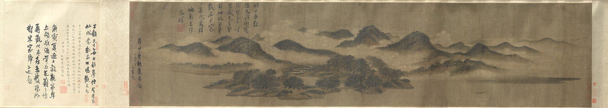

这个月我做了一个很朴素的实验：不装新的应用，也不靠意志力，只改变读书时身体周围的那几样东西。结果是，注意力比我想的更像一种环境问题。
实验持续了三十天。每天读四十分钟，读完在纸上记一行字：今天有没有走神，走神了几次，因为什么。记录很粗糙，但足够看出一些重复出现的模式。
一、把手机放到另一个房间
第一周只做了一件事：读书时把手机放到另一个房间，关上门。不是为了“忍住不看”，而是让它变得需要站起来、走过去，才能看见。
这个动作没有让我变得更自律，只是把一次冲动的成本从“抬起眼睛”提高到了“离开椅子”。大多数冲动在这个距离上就消失了。
专注不是把世界关掉，而是只留下一个入口。
第二周开始，我注意到走神的次数并没有归零，但走神之后回来的速度变快了。以前一次分心会带走十分钟，现在往往几十秒就能回到段落里。
二、让文字变窄
第二件事与屏幕有关。我把阅读器的行宽收窄到三十到四十个汉字，行距放到接近两倍。眼睛从一行末尾回到下一行开头时，不需要重新寻找位置。
这听起来像排版细节，实际影响的是节奏。宽栏让人读得快，也更容易滑走；窄栏逼着人慢下来，一行只装一个意思。
.measure {
max-width: 42em;
line-height: 1.95;
}当然，窄栏不是越窄越好。一行少于二十个字，断句会变得频繁，阅读反而碎。三十到四十，是我试过最舒服的区间。
三、留一点雾
最后一件小事，是允许自己读得慢。以前我会给每次阅读设定页数，现在我更愿意设时间：四十分钟到了就停，哪怕只读了三页。
雾不是障碍。雾让远处的山有了层次，也让近处的字有了停顿。

三十天结束时，走神的次数没有变成零。但我不再把它当成失败，而是当成阅读的一部分：看见它，回到句子，继续往下读。